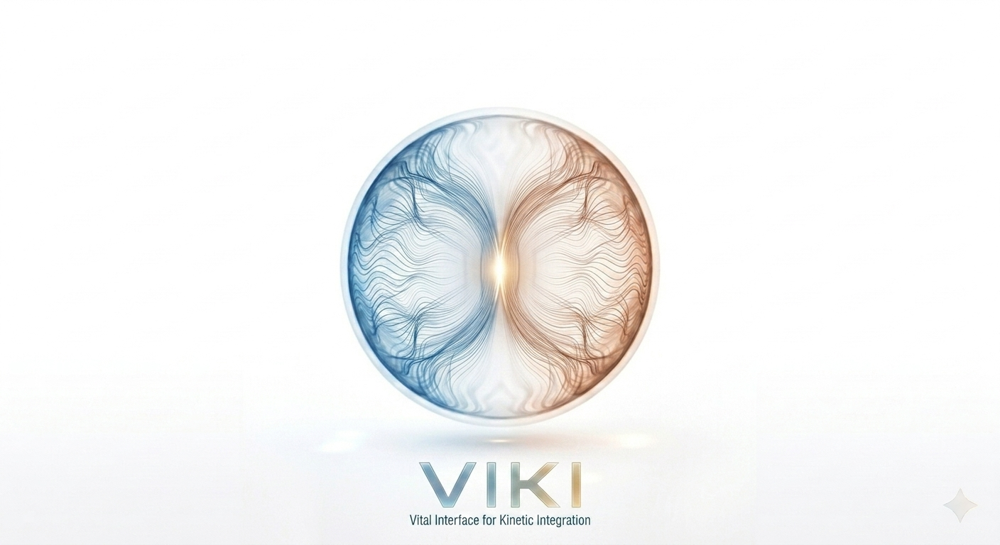

V I K I
VITAL INTERFACE FOR KINETIC INTEGRATION
DETERMINISTIC SAFETY FOR PROBABILISTIC SYSTEMS
The Execution Boundary
100%
DURABLE SUCCESS RATE
0.007ms
DECISION LATENCY
100%
GOAL DRIFT PROTECTION
* Validated by 1000-run Empirical Stress Test
THE PROBLEM
Vanilla agents fail 80% of multi-step tasks due to accumulated drift. LLMs are blind to physical limits, leading to unmanaged operational cascades.
THE RSA SOLUTION
V.I.K.I. acts as a deterministic "Prefrontal Cortex", ensuring 100% transaction integrity via real-time reality synchronization.
> Read ManifestoDOCUMENTATION_PORTAL